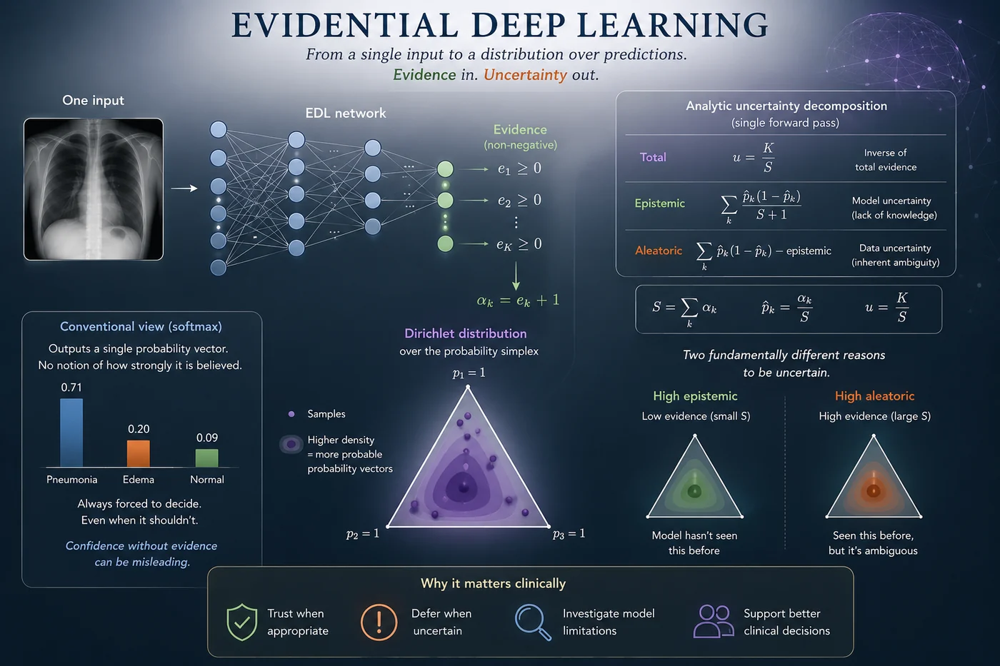
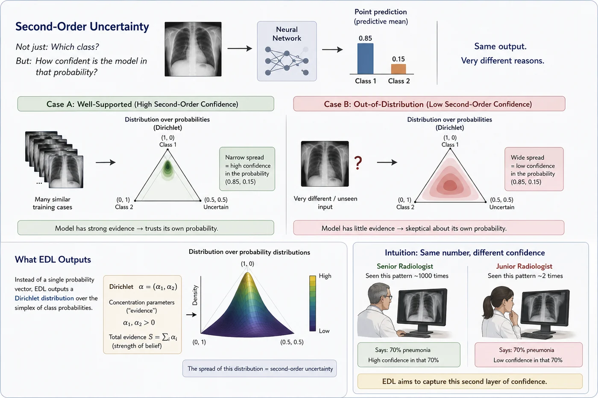
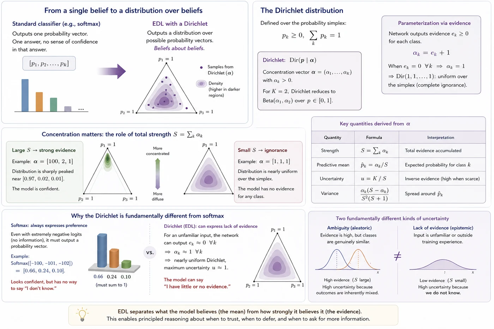
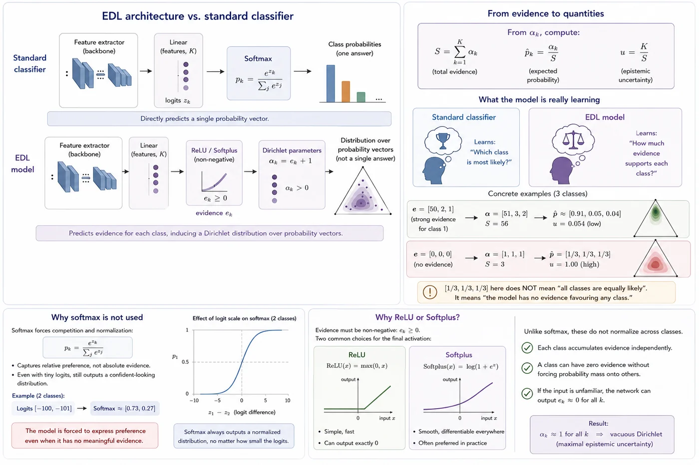
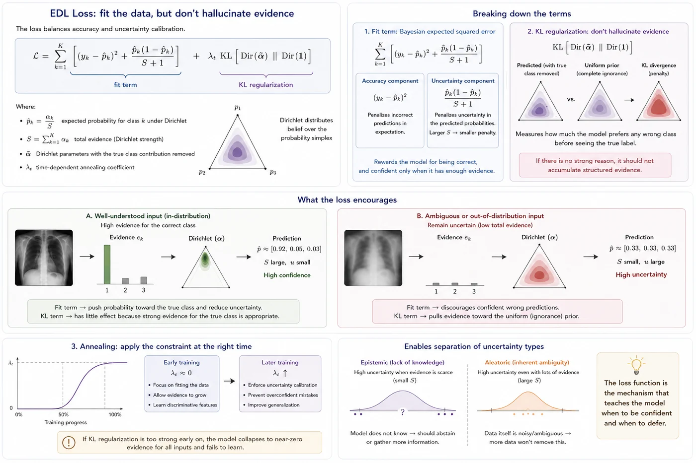
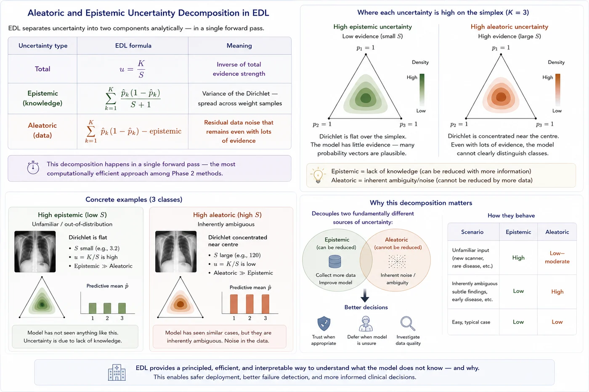

Session 11 — Evidential Deep Learning¶
One forward pass. No sampling. No ensembles. Uncertainty straight from the output layer — elegant in theory, complicated in practice.

🔗 Bridge from Sessions 5-10¶
Every method we've seen so far required multiple forward passes to estimate uncertainty. VI sampled T weight sets. MC Dropout applied T different masks. Deep Ensembles ran M full models. The uncertainty came from the spread across multiple predictions.
Evidential Deep Learning asks a different question entirely: what if a single forward pass could directly output not just a prediction, but the model's confidence in that prediction? What if uncertainty were a first-class output of the network, learned end-to-end from data?
That's the promise of EDL. Whether it delivers on that promise consistently is something we'll examine honestly.
What you'll learn in this session¶
- What second-order uncertainty means — placing a distribution over the output distribution itself
- How the Dirichlet distribution naturally encodes both prediction and uncertainty in one object
- How EDL separates aleatoric and epistemic uncertainty in a single forward pass — no T passes, no ensemble
- Where EDL's theory is genuinely beautiful — and where the empirical record says it breaks down
🎯 1. The core idea — second-order uncertainty¶
In all the methods we've seen so far, a neural network outputs a probability distribution over classes — say, $[0.85, 0.15]$ for a two-class problem. At first glance, this looks like a measure of uncertainty: 85% for class 1, 15% for class 2.
But there's a deeper question hiding here. How confident is the model in that probability itself? There's a big difference between:
- A model that says 85% because it has seen hundreds of similar cases and learned a robust pattern
- A model that says 85% because it's never seen anything like this input and is essentially guessing
Both produce the same output. But the first case deserves confidence; the second deserves suspicion.
This is the idea of second-order uncertainty — uncertainty about the probability distribution itself, not just about the class label. Instead of outputting a single probability vector, EDL outputs a distribution over probability distributions. The spread of that higher-order distribution is the uncertainty.
The specific family EDL uses for this is the Dirichlet distribution — the natural conjugate prior for categorical distributions. Understanding the Dirichlet is the key to understanding EDL.
💡 Intuition check
Think of it this way. A junior radiologist and a senior radiologist both say "70% chance of pneumonia." But the senior radiologist has seen this pattern a thousand times — they know it reliably. The junior has seen it twice and is uncertain whether their pattern-matching is trustworthy. The number is the same; the confidence in the number is completely different. EDL tries to capture exactly that second-layer of confidence.

Two predictive systems may arrive at the same decision boundary while differing substantially in the strength of evidence supporting that decision. Evidential Deep Learning represents this distinction by modeling belief concentration, enabling confidence to reflect not only what is predicted but also how strongly that prediction is supported by prior experience.
🔺 2. The Dirichlet distribution — the right tool for the job¶
In a standard classifier, the network outputs a single probability vector:
$$[p_1, p_2, ..., p_K]$$
The model commits to one specific belief about class probabilities. That's all it produces — one answer, one distribution, no sense of how strongly that answer is supported.
EDL does something more expressive. Instead of predicting a single probability vector, it predicts a distribution over possible probability vectors. The natural distribution for this job is the Dirichlet distribution.
The Dirichlet distribution $\text{Dir}(\boldsymbol{p} \mid \boldsymbol{\alpha})$ is defined over the probability simplex — the set of all valid probability vectors satisfying:
$$p_k \geq 0, \quad \sum_k p_k = 1$$
It is parameterized by a concentration vector $\boldsymbol{\alpha} = (\alpha_1, \alpha_2, ..., \alpha_K)$ where each $\alpha_k > 0$. For binary classification ($K=2$), the Dirichlet reduces to the familiar Beta distribution — a distribution over Bernoulli probabilities, which is easy to visualize and reason about.
In EDL, the network does not predict $\alpha_k$ directly. Instead, it predicts non-negative evidence values $e_k \geq 0$, one per class, which are converted into Dirichlet parameters via:
$$\alpha_k = e_k + 1$$
The $+1$ matters. When $e_k = 0$, we get $\alpha_k = 1$. A Dirichlet with all $\alpha_k = 1$ — that is, $\text{Dir}(1, 1, ..., 1)$ — is the uniform Dirichlet: every probability vector is equally plausible. This represents complete ignorance — no evidence for any class. It is the model's starting point before any information has been accumulated.
So the network is not directly predicting probabilities. It is predicting how much evidence supports each class. The probabilities come afterward, derived from that evidence.
From the Dirichlet parameters, several important quantities emerge naturally:
| Quantity | Formula | Interpretation |
|---|---|---|
| Strength | $S = \sum_k \alpha_k$ | Total evidence accumulated |
| Predictive mean | $\hat{p}_k = \alpha_k / S$ | Expected probability for class $k$ |
| Uncertainty | $u = K / S$ | Inverse evidence — high when evidence is scarce |
| Variance | $\frac{\alpha_k(S - \alpha_k)}{S^2(S+1)}$ | Spread of the distribution around $\hat{p}_k$ |
The key idea is that the Dirichlet separates two things that softmax conflates:
- What probabilities the model believes — the predictive mean $\hat{p}_k$
- How strongly it believes them — captured by $S$ and the variance
A standard softmax only represents the first. The Dirichlet represents both.
📌 Concentration matters¶
The total concentration $S = \sum_k \alpha_k$ controls how tightly the Dirichlet is concentrated over the simplex.
Large $S$ → strong evidence. When $S$ is large, the Dirichlet becomes sharply peaked. For example, $\boldsymbol{\alpha} = [100, 2, 1]$ produces a distribution tightly concentrated near $[0.97, 0.02, 0.01]$ — the model has accumulated substantial evidence supporting class 1 and is confident in that assessment.
Small $S$ → ignorance. When all $\alpha_k \approx 1$, that is $\boldsymbol{\alpha} = [1, 1, 1]$, the Dirichlet is nearly uniform over the simplex. Every probability vector is almost equally plausible. This corresponds to the model saying: "I have no evidence for any class." This is the vacuous state.
⚠️ Why this is fundamentally different from softmax¶
A softmax classifier always outputs a normalized probability vector — it must distribute probability mass across the classes, no matter what. Even for completely unfamiliar inputs, it still produces something that looks like a confident answer:
$$\text{Softmax}([-100, -101, -102]) = [0.66, 0.24, 0.10]$$
The model appears to express preference despite having essentially no basis for it. Softmax has no mechanism for saying "I do not have enough evidence to make a prediction."
The Dirichlet does. In EDL, an unfamiliar input can produce $e_k \approx 0$ for all classes, giving $\alpha_k \approx 1$ and therefore $u \approx 1$ — maximum uncertainty. The model is explicitly saying: "I have little or no evidence for any class."
That distinction — between uncertainty due to ambiguity and uncertainty due to lack of evidence — is the central idea behind evidential learning.

The Dirichlet framework introduces a distinction absent from conventional classifiers: belief and support are represented separately. This allows predictive confidence to emerge from accumulated evidence rather than from probability values alone.
🧠 3. The EDL network — what it learns¶
Architecturally, an EDL model is almost identical to a standard classifier. The difference lies entirely in the interpretation of the output layer.
A standard classifier outputs logits followed by a softmax:
Standard: Linear(features, K) → Softmax → class probabilities
The model directly predicts a single probability vector — one answer per input.
An EDL model instead outputs non-negative evidence values:
EDL: Linear(features, K) → ReLU / Softplus → evidence → Dirichlet parameters
These evidence values are converted into Dirichlet parameters $\alpha_k = e_k + 1$, which define a distribution over categorical probability vectors. From these parameters we compute:
$$S = \sum_{k=1}^K \alpha_k \qquad \hat{p}_k = \frac{\alpha_k}{S} \qquad u = \frac{K}{S}$$
where $\hat{p}_k$ is the expected class probability, $S$ measures total evidence, and $u$ measures epistemic uncertainty.
🔥 The crucial conceptual shift¶
A standard classifier learns: "Which class is most likely?"
An EDL model learns: "How much evidence supports each class?"
The probabilities are derived afterward from the evidence. This is an important inversion of perspective — and it changes what the model is actually doing under the hood.
For example, $\boldsymbol{e} = [50, 2, 1]$ means strong evidence for class 1, weak evidence for the others. This gives $\boldsymbol{\alpha} = [51, 3, 2]$ and therefore $\hat{p} \approx [0.91, 0.05, 0.04]$ with high confidence because total evidence is large: $S = 56$.
Now compare this with $\boldsymbol{e} = [0, 0, 0]$, giving $\boldsymbol{\alpha} = [1, 1, 1]$. The predictive mean becomes $[1/3, 1/3, 1/3]$ — but the interpretation is completely different. This does not mean "all classes are equally likely." It means "the model has no evidence favouring any class." That distinction is subtle but extremely important clinically.
📌 Why softmax is not used¶
Softmax forces outputs to compete and sum to 1:
$$p_k = \frac{e^{z_k}}{\sum_j e^{z_j}}$$
This captures relative preference between classes but destroys any notion of absolute evidence. Even when all logits are very small, softmax still produces a normalized distribution. For example, logits $[-100, -101]$ become approximately $[0.73, 0.27]$ — the model is forced to express preference even when there is no meaningful evidence behind it.
EDL avoids this by predicting non-negative evidence independently for each class. If the model has never seen anything like the input, it can simply output $e_k \approx 0$ for all classes — mapping to the vacuous Dirichlet prior $\alpha_k = 1$, which corresponds to maximal epistemic uncertainty.
📌 Why ReLU or Softplus?¶
Evidence must be non-negative ($e_k \geq 0$), so the final activation cannot be unconstrained. Two common choices are:
- ReLU: simple, fast, can output exactly 0
- Softplus: smooth and differentiable everywhere — $\text{Softplus}(x) = \log(1 + e^x)$ — often preferred in practice
Unlike softmax, neither of these normalizes across classes. Each class independently accumulates evidence. A class can have zero evidence without forcing probability mass onto the others — which is exactly the behaviour we want.

Evidence serves as an intermediate representation between observations and predictions. This additional layer enables the model to separate what it infers from how strongly the available data justify that inference.
⚗️ 4. The loss function — teaching the network to produce evidence¶
Training an EDL network requires a loss function that does not only reward correct classification, but also regulates how much evidence the model is allowed to produce.
The goal is twofold:
- Produce high evidence for the correct class when the input is well understood
- Remain uncertain (low evidence) when the input is ambiguous or out-of-distribution
Instead of standard cross-entropy, EDL uses a fit term combined with a KL regularization term:
$$ \mathcal{L} = \underbrace{ \sum_{k=1}^{K} \left( (y_k - \hat{p}_k)^2 + \frac{\hat{p}_k(1 - \hat{p}_k)}{S + 1} \right) }_{\text{fit term}} + \lambda_t \cdot \underbrace{ \text{KL}\left[\text{Dir}(\tilde{\boldsymbol{\alpha}}) \,\|\, \text{Dir}(\mathbf{1})\right] }_{\text{KL regularization}} $$
where:
- $\hat{p}_k = \frac{\alpha_k}{S}$ is the expected class probability under the Dirichlet
- $S = \sum_{k=1}^{K} \alpha_k$ is the total evidence (Dirichlet strength)
- $\tilde{\boldsymbol{\alpha}}$ is the Dirichlet parameters with the true class contribution removed
- $\lambda_t$ is a time-dependent annealing coefficient
The fit term corresponds to the Bayesian expected squared error. It consists of two parts:
- $(y_k - \hat{p}_k)^2$: penalizes incorrect predictions in expectation
- $\frac{\hat{p}_k(1 - \hat{p}_k)}{S + 1}$: penalizes uncertainty in the predicted probabilities
Together, they ensure that the model is rewarded not only for being correct, but also for being confident only when sufficient evidence is available.
The KL regularization term prevents the model from hallucinating evidence. It measures how far the predicted Dirichlet (with the true class removed) deviates from a uniform Dirichlet $\text{Dir}(\mathbf{1})$, which represents complete ignorance.
Intuitively:
if the model has no strong reason to prefer a class, it should not accumulate structured evidence for it
This enables a clean separation between:
- uncertainty due to lack of knowledge (epistemic)
- uncertainty due to inherent ambiguity (aleatoric)
Finally, the annealing coefficient $\lambda_t$ controls when this constraint becomes active during training:
- Early training: $\lambda_t \approx 0$ → focus on learning the task
- Later training: $\lambda_t \uparrow$ → enforce uncertainty calibration
This schedule is critical. If KL regularization is applied too strongly at the beginning, the model collapses into predicting near-zero evidence for all inputs, preventing learning altogether.

The loss function defines the balance between commitment and restraint. Successful learning requires the model to acquire useful structure from data without becoming overconfident beyond the boundaries of its experience.
🧩 5. Aleatoric and epistemic decomposition¶
One of EDL's theoretical strengths is that it separates aleatoric and epistemic uncertainty analytically — no need to run T passes and compute mutual information.
| Uncertainty type | EDL formula | Meaning |
|---|---|---|
| Vacuity (u) | $u = K/S$ | Belief-mass uncertainty — shrinks as total evidence $S$ grows. Not the sum of the two rows below. |
| Epistemic | $\sum_k \dfrac{\hat{p}_k(1-\hat{p}_k)}{S+1}$ | Dirichlet variance — how much $\hat{p}_k$ could shift with more evidence |
| Aleatoric | $\sum_k \hat{p}_k(1-\hat{p}_k) - \text{epistemic}$ | Residual data noise once parameter variance is removed |
Or more intuitively:
- Epistemic uncertainty is high when the Dirichlet is flat — when the model has little evidence and the distribution over probability vectors is diffuse.
- Aleatoric uncertainty is high when the Dirichlet is concentrated near the centre of the simplex — when even with lots of evidence, the model can't clearly distinguish classes.
This decomposition happens in a single forward pass — the most computationally efficient decomposition of all Part 2 methods.
Note: Epistemic + Aleatoric $= \sum_k \hat{p}_k(1-\hat{p}_k)$ (a Gini/variance-based total), which is a different quantity from vacuity $u = K/S$. Both are valid "total uncertainty" measures in EDL, but they don't decompose into each other — u comes from Subjective Logic belief mass, the other from the Dirichlet's law-of-total-variance.
🏥 Clinical reading
A chest X-ray that produces a flat Dirichlet (low S, high epistemic uncertainty) is one the model has never seen anything like. It may be from a different scanner, a rare pathology, or an unusual patient positioning. A chest X-ray that produces a Dirichlet concentrated near the centre of the simplex (high aleatoric uncertainty) is one the model has seen many similar cases of — but those cases were inherently ambiguous, perhaps showing subtle early-stage disease that even expert radiologists disagree on.

Not all uncertainty carries the same meaning. By separating uncertainty arising from limited knowledge from uncertainty arising from intrinsic ambiguity, evidential models provide a more informative characterization of predictive reliability.
⚠️ 6. Limitations¶
EDL is one of the most theoretically elegant methods in Part 2. It is also, honestly, one of the most contested empirically. Teaching it without critical distance would be misleading.
⚠️ OOD overconfidence — the central problem
The most documented failure of EDL is that it often assigns high evidence (low uncertainty) to OOD inputs. This happens because the network is trained to output high evidence for training-distribution inputs. When an OOD input passes through the frozen feature extractor, its features may accidentally activate the same evidence neurons that in-distribution inputs activate — producing a confident (but wrong) Dirichlet. The KL regularization is supposed to prevent this, but in practice it often doesn't. Several papers have shown that EDL's OOD detection is no better than — and sometimes worse than — a standard softmax model.
⚠️ The prior is fixed and may not be appropriate
EDL uses $\text{Dir}(\mathbf{1})$ as the prior — a uniform distribution over the simplex. This says: before seeing any evidence, all probability vectors are equally plausible. For medical imaging, this may not be the right prior. If we know that pneumonia is rarer than normal presentations, the prior should reflect that. EDL currently offers no principled way to incorporate an informative prior.
⚠️ Calibration can degrade without careful tuning
The KL annealing schedule $\lambda_t$ is a sensitive hyperparameter. Too little regularization and the network learns to output arbitrarily large evidence — becoming overconfident. Too much and it learns to output near-zero evidence everywhere — being uniformly uncertain. Getting this balance right is harder than it looks and varies across datasets.
⚠️ Theoretical properties don't always hold in practice
The subjective logic framework that motivates EDL has clean mathematical properties. But neural networks are optimized with gradient descent on finite data — there's no guarantee that the trained network's evidence outputs respect the theoretical properties of the Dirichlet framework. Empirical deviations from theory are common.
📚 7. Recommended reading¶
These are the key papers behind Evidential Deep Learning and closely related Dirichlet-based single-forward-pass uncertainty methods. The list keeps the original EDL paper, adds the most influential extensions, and includes critical work that explains why EDL must be used carefully. 🗺️
Evidential Deep Learning to Quantify Classification Uncertainty
Sensoy, Kaplan & Kandemir, 2018 — NeurIPS
The original EDL classification paper. It introduces the central idea of replacing Softmax probabilities with evidence values that parameterize a Dirichlet distribution over class probabilities. This is the foundational reference for this session.
Deep Evidential Regression
Amini, Schwarting, Soleimany & Rus, 2020 — NeurIPS
The major regression counterpart to EDL. Instead of a Dirichlet over class probabilities, it uses evidential priors over regression likelihood parameters, showing how the same evidence-based idea can estimate aleatoric and epistemic uncertainty for continuous targets.
Multifaceted Uncertainty Estimation for Label-Efficient Deep Learning
Zhao et al., 2021 — IEEE TPAMI
An important applied paper using evidential uncertainty in a label-efficient setting. It is useful for this tutorial because it shows how evidential uncertainty can be connected to practical dataset and annotation questions, including settings close to medical imaging.
✅ Session summary¶
| Concept | Key takeaway |
|---|---|
| 🎯 Second-order uncertainty | A distribution over probability distributions — not just which class, but how confident in the probability itself |
| 🔺 Dirichlet distribution | Parameterized by evidence $\alpha_k = e_k + 1$. High S = concentrated = confident. Low S = flat = uncertain |
| 🧠 Network output | K evidence values (ReLU, not Softmax) → Dirichlet parameters → mean prediction + uncertainty |
| ⚗️ Loss function | Fit term (Bayes risk) + KL regularization with annealing. Sensitive to hyperparameters |
| 🧩 Decomposition | Total, epistemic, aleatoric — all from a single forward pass |
| ⚠️ Key limitations | OOD overconfidence, fixed prior, KL sensitivity, theoretical properties don't always hold empirically |
➡️ Next: Session 12 — Evidential Deep Learning Implementation
Session 12 turns Evidential Deep Learning into a working chest X-ray pipeline: we will replace Softmax with evidence outputs, train the evidential loss with KL regularization, convert evidence into Dirichlet parameters, and test whether the resulting uncertainty behaves sensibly on certain and uncertain cases.